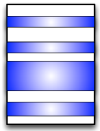
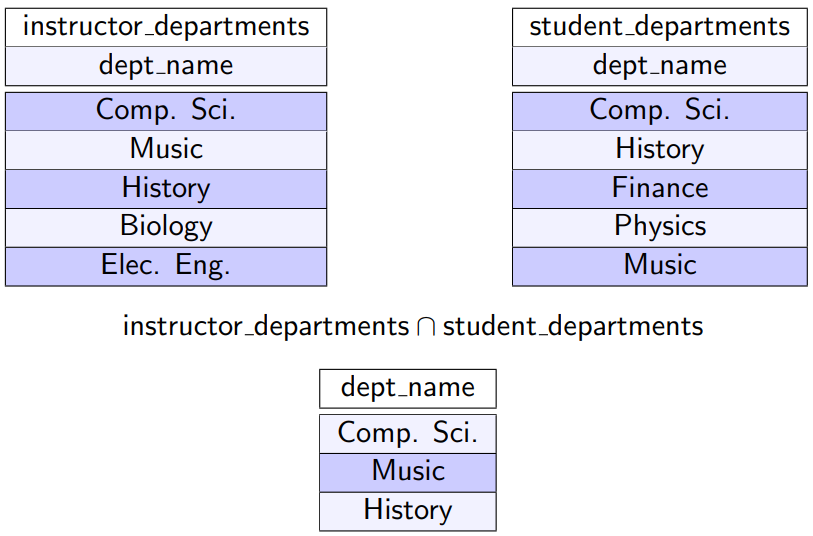
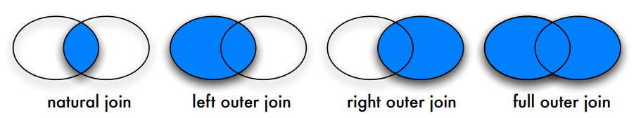
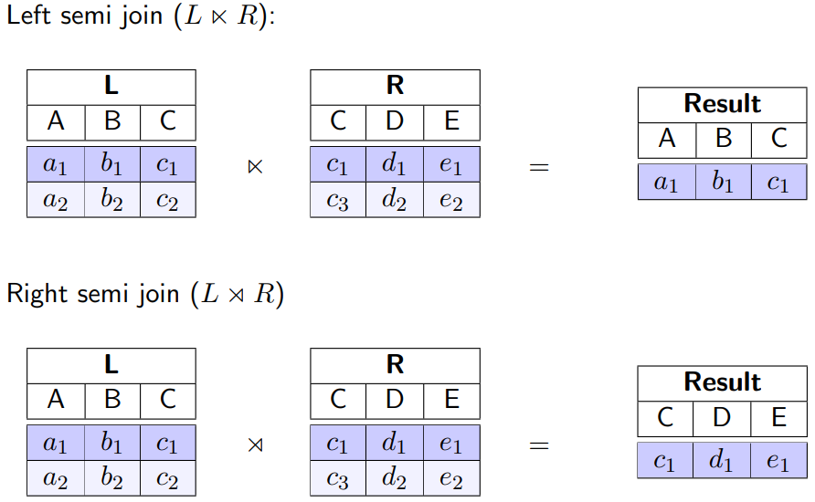

Relational Model and Relational Algebra¶
Learning Goals
- Explain the relational model
- Create non-trivial relational algebra queries
- Use the various join types in relational algebra queries
- Explain the limitations of relational algebra
The Relational Model¶
Foundations¶
Assume D_1, D_2,\dots,D_n are domains
Relation:¶
R\subseteq D_1\times \dots \times D_n
- Example: telephoneBook\subseteq string \times string \times integer
- Domains can be identical D_i=D_j for i \neq j
- Based on mathematical sets
Relational Schema¶
- Defines the structure of stored data
- Is denoted as sch(R) or \mathcal R
- Notation: R(A_1: D_1, A_2:D_2, \dots) with A_i denoting attributes
- Example:
- telephoneBook(name: string, street:string, \underline{phoneNumber:integer})
Illustration of Basic Concepts¶
- Header: relation schema
- Column header: attribute
- Entries in the table: relation
- Row in the table: tuble
- An entry of a cell: attribute value
- Underlined attributes: primary keys

Foreign Key¶
- A relation may include the primary key attributes of another table
- Valid values for foreign key attributes must appear in the primary key of the referenced table
Example¶
Characteristics¶
Tuple Ordering¶
Tuples in a relation are unordered
These relations have the same information content:
Attribute Ordering¶
In accordance with the mathematical definition of tuples, attributes in a tuple/relation are ordered**
These relations have different information content:

However:
- The order of attributes are immaterial for most applications
- Using attribute names instead of ordering is more convenient
- The Cartisian product becomes commutative
Atomic Values¶
- Values in a tuple are atomic (indivisible)
- A value cannot be a structure, a record, a collection type, or a relation
Example:
Null Values¶
A special null value is used to represent values that are unknown or inapplicable to certain tuples
Example:

Duplicates¶
A relation adheres to the mathematical definition of a set
- No two tuples in a relation may have identical values for all attributes
Example:

Relational Algebra¶
Relational Algebra Operations¶
| Name | Symbol |
|---|---|
| Projection | \pi |
| Selection | \sigma |
| Rename | \rho |
| Cartesian product | \times |
| Union | \cup |
| Difference | - |
| Intersection | \cap |
| Join | \Join |
| Left Outer Join | \leftouterjoin |
| Right Outer Join | \rightouterjoin |
| Outer Join | \outerjoin |
| Left Semi Join | \leftsemijoin |
| Right Semi Join | \rightsemijoin |
| Grouping | \gamma |
| Division | \div |
The operations marked with bold is the fundamental operations
- Any relational algebra query can be expressed with the set of fundamental operations only
- Removing any one of these operations reduces the expressive power
Unary vs Binary operations
- Unary operations: \sigma, \pi, \rho
- Binary operations: \times, \cup, -
Fundamental Operations¶
Operations and their use:
- Input: one or multiple relations
- Output: a relation
Operations can be combined (with some rules)
Projection¶
The result is a relation of n columns obtained by removing the columns that are not specified.


Extended Projection¶


Selection¶
Symbol: \sigma_F
- Selection predicate F consist of:
- Logic operations: \or (or), \and (and), \neg (not)
- Arithmetic comparison operators: <, \leq, =, >, \geq, \neq
- Attribute names of the argument relations or constants as operands
Selecting/filtering rows of a table according to the selection predicate

$$
\sigma_{salary>80000}(instructor)
$$


Rename¶
Relation
Renaming a relation R to S:
- \rho_S(R)
Attribute
Renaming attribute B to A:
- \rho_{A\leftarrow B}(R)
Some literature uses \beta for the rename operation
Cartesian Product¶
AKA Cross Product
The Cartesian product (R\times S) between relations R and S consists of all possible combinations (|R|*|S| pairs) of tuples from both relations
Result schema: $$ sch(R\times S)=sch(R) \cup sch(S) = \mathcal R \cup \mathcal S $$ Contains many (useless) combinations!
Attributes in the result are referenced as R.A or S.A to resolve ambiguity.
Set Operations¶
Set operations union, intersection, and difference can also be applied to relations
Requirements
Both involved relations must be union-compatible:
- they have the same number of attributes
- the domain of each attribute in column order is the same in both relations
Union¶
The result of a union (R\cup S) between two relations R and S contains all tuples from both relations without duplicates
Example:

Difference¶
The difference (R-S or R \setminus S) of two relations R and S removes all tuples from the first relation that are also contained in the second relation

Overview of Fundamental Operations¶
Non-Fundamental Operations¶
Intersection¶
The intersection (R\cap S) of two relations R and S consists of a set of tuples that occur in both relations.

With Fundamental Operations¶
Intersection can be expressed as difference (R\cap S= R- (R-S))
Join¶
The natural join combines two relations via common attributes (same name and domains) by combining only tuples with the same values for common attributes.
Given two relations (and their schema)
- R(A_1,\dots,A_m, B_1,\dots,B_k)
- S(B_1,\dots,B_k,C_1,\dots,C_n)
Example:
Result:

Tuples without matching partners (dangling tuples) are eliminated
With Fundamental Operations¶
Natural join can be expressed as a Cartesian product followed by selections and projections
Example

Is Join Commutative¶
For now, we do not consider joins and Cartesian products to be commutative.
For query optimization later, we usually consider joins as well as Cartesian product and other join variants to be commutative.
If we want to hold on to the mathematical definition of tuples and still consider joins to be commutative, we need to apply a projection operation to reorder the attributes: $$ \pi_L(R\Join S) = \pi_L(S\Join R) $$
Outer Join¶
- ⟕ - Left Outer Join
- Keep dangling tuples in the left operand relation
- ⟖ - Right Outer Join
- Keep dangling tuples in the right operand relation
- ⟗ - (Full) Outer Join
- Keep dangling tuples of both operand relations

Examples


Semi Join¶
Find all tuples in a relation for which there are matching tuples in the other relation
Left semi join: $$ L \leftsemijoin R= \pi_{\mathcal L}(L\Join R) $$
where \mathcal L represents the set of L's attributes
Right semi join: $$ L\rightsemijoin R = R \leftsemijoin L = \pi_{\mathcal R}(L \Join R) $$ Examples

Grouping¶
Tuples with the same attribute values (for a specified list of attributes) are grouped.
An aggregate function is applied to each group (computing one value for each group)
Typical aggregate functions:
- count - number of tuples in a group
- sum - sum of attribute values in a group
- min, max, avg
Notation $$ \gamma_{L;F}(R) $$
- L: list of attributes for grouping
- F: aggregate function
Alternative symbols \mathcal G or \beta
Example:
Determine the number of students per semester:

More examples in DBS2 slides p75
Division¶
Example
Find all studIDs of students that took all 4 ECTS courses
- takes(studID, courseID)
- course(courseID, title, ects, teacher)
Formal definition:

See examples in DBS2 slides p81